Interactive homology calculator
Homology is a tool that helps mathematicians reason about complicated spaces. It detects if two points in a space can be connected by a path, or if a loop can be filled by a disk. Its generalizations have influenced a large fraction of modern mathematics.
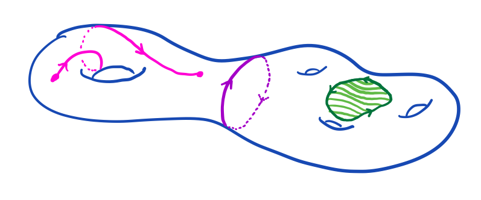This calculator uses simplicial homology, an enjoyable and concrete theory. We intentionally skip certain details in order to limit the required background. (I already know simplicial homology; please take me to the long exact sequence calculator.)
Simplicial Complexes
An "abstract simplicial complex" on the vertex set \(V = \{0, \ldots, n\}\) is a collection \(\mathcal{F}\) of subsets of \(V\) called "faces" with the requirement that every subset of a face is also a face.
A "subcomplex" \( A \subseteq X \) is an abstract simplicial complex so that every face of \(A\) is also a face of \(X\). When we want to talk about a complex and subcomplex simultaneously, we call them a "pair" and write \( (X, A) \).
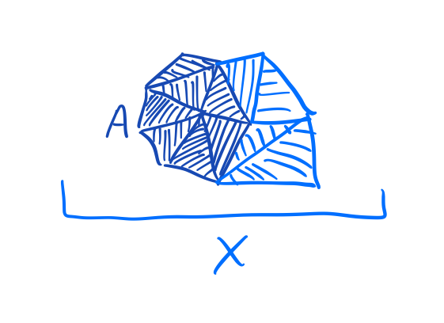Abstract simplicial complexes are simple to describe to a computer, for example, by giving a list of maximal faces.
When humans reason about abstract simplicial complexes, they often imagine a geometric subset \(|X| \subset \mathbb{R}^{n + 1}\). A point belongs to the subset if its coordinates are nonnegative, sum to one, and attain strictly positive values only on indices constituting a face of \(X\).
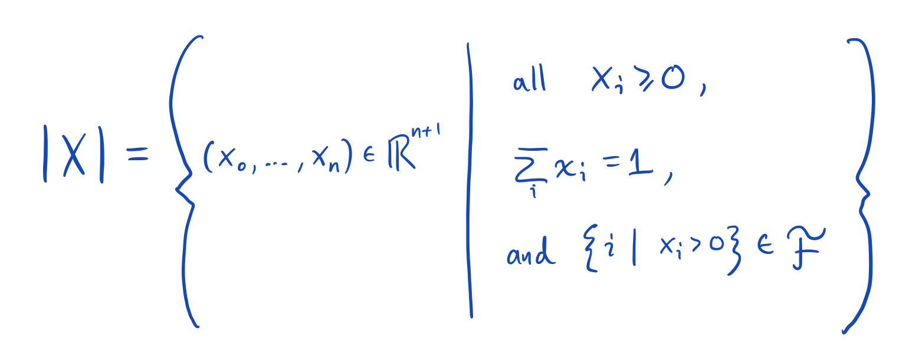Once an abstract simplicial complex has been realized in this way, we drop the adjective "abstract." All of the illustrations on the page are of realized simplicial complexes. (They look smooth and blobby, but if you zoom in far enough you will see the triangulations.) Also, they are rendered as if they are (2d-projections of) 3d spaces, even though they are actually carefully chosen projections of \(n+1\)-dimensional spaces.
Strictly speaking, this calculator doesn't know or need to know anything about this geometry, but humans sometimes like to keep it in mind.
The boundary of a face
If we allow every subset of \(V\) to be a face, we obtain the "\(n\)-simplex." The geometric realization of this abstract simplicial complex is all vectors with entries that are nonnegative and that sum to one. Most points in this space are positive in every coordinate. If we imagine a journey starting at such a point, we can travel through the space allowing various coordinates to increase and decrease, as long as the total sum remains exactly one at all times.
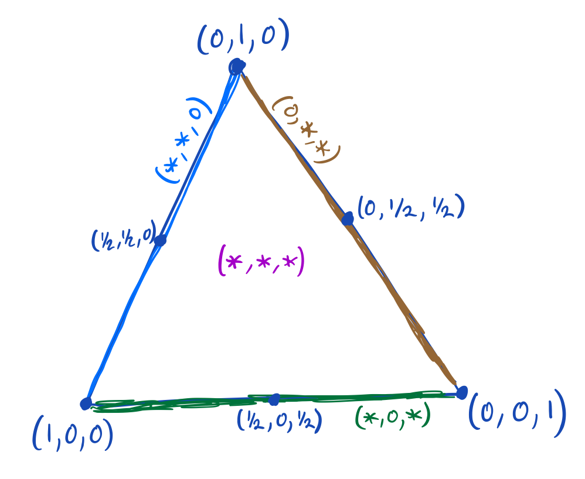It is easy to tell when you reach the edge of the space: one or more of your coordinates will drop to zero. You will then be on the face that omits the vertices corresponding to the coordinates that are zero. So the boundary faces of the \(n\)-simplex are those subsets of \(V\) that omit at least one vertex. It turns out that we want to take an alternating sum of these faces to obtain the "algebraic" boundary, and that the coefficients of all faces that omit multiple vertices will be zero.
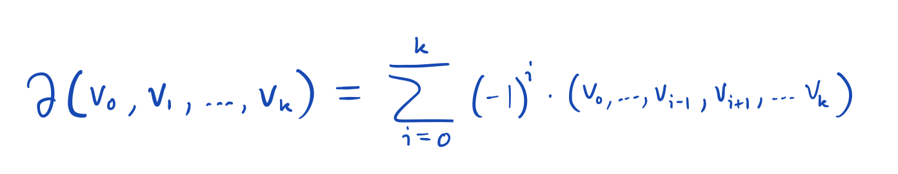For example the boundary of a one-simplex (a.k.a. interval) is given by
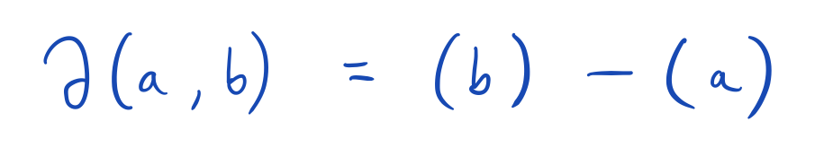Note that the signs here agree with the signs in the fundamental theorem of calculus.
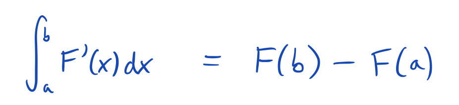The boundary of a two-simplex (a.k.a. triangle) is given by
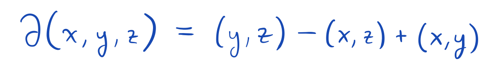More generally, the signs match those arising in Stokes' theorem.
Remark about ordering of the vertices.
The formula cares about the order of the vertices! We have chosen to always use increasing order, but there is a geometry argument that works here to show that reversing the order of two vertices should introduce a minus sign. (Roughly, this comes from the negation of signed volume under reflection, or even more concretely, the sign-flipping of one-dimensional integrals under endpoint swapping.) 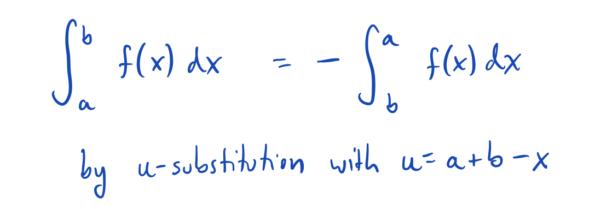
Remark about adding and subtracting faces.
Why are we suddenly allowing ourselves to add and subtract faces? Maybe we're planning to integrate (as in Stokes' theorem) or otherwise convert faces to numbers, at which point the adding and subtracting will make sense; or maybe we just want to have some fun.Chains
We now hereby allow addition and subtraction of faces. The resulting objects will be sums of faces with integer coefficients. Let us call one of these integer combinations a "chain." Every face becomes a chain with a single term with implicit coefficient coefficient \( 1 \in \mathbb{Z}\). Extend the boundary map to general chains by the rules \( \partial(x + y) = \partial(x) + \partial(y) \) and \( \partial(kx) = k \partial(x) \) for chains \(x, y\) and integers \(k \in \mathbb{Z}\). Faces with coefficient zero can be canceled.
A chain on a pair \( (X, A) \) is an integer combination of faces of \(X\). Two chains on \( (X, A) \) are considered equal if their coefficients disagree only on faces of \(A\). If \(A\) is empty, then two chains must match perfectly to be considered equal.
Cycles
A cycle on a pair \( (X, A) \) is a chain on \(X\) whose boundary is a chain on \(A\). If \(A\) is empty, the boundary must be zero.
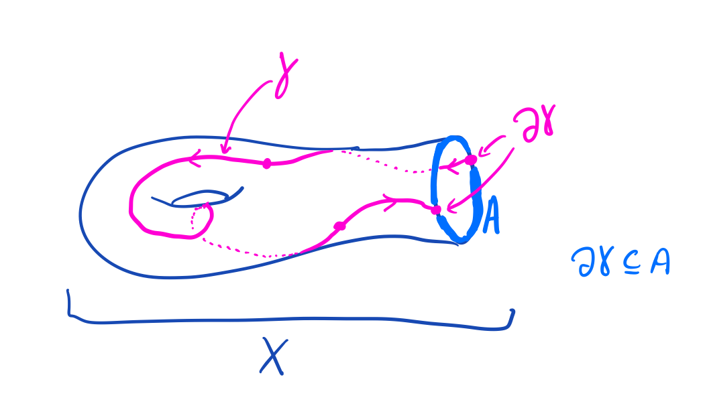The following program gives generators for the cycles on \((X, A)\).
Boundaries
A boundary on a pair \( (X, A) \) is a chain on \(X\) that can be written as the boundary of another chain on \(X\) plus some error chain on \(A\). If \(A\) is empty, then this error is forced to be zero. 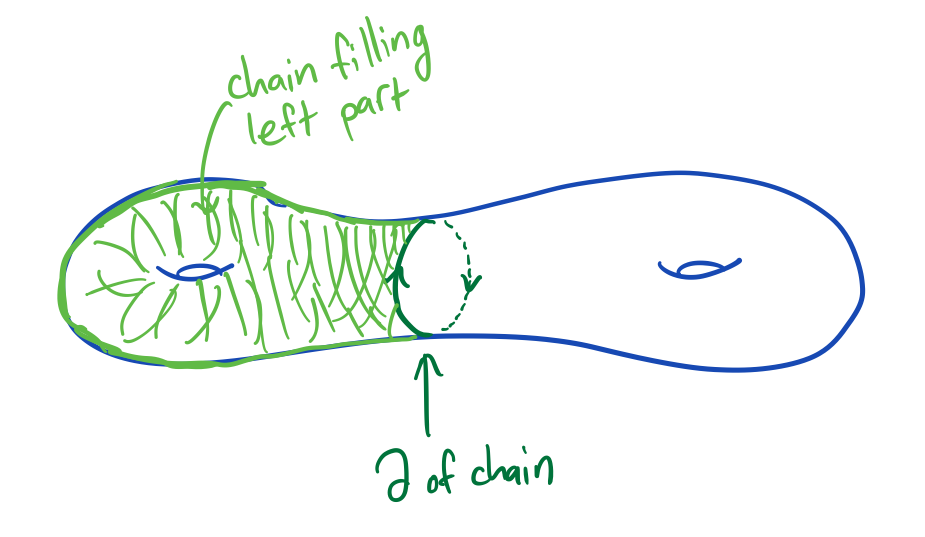The following program gives generators for the boundaries on \( (X, A) \).
Every boundary is a cycle
It is a beautiful fact that every boundary is a cycle. Consequently, producing boundaries is as easy as applying \( \partial \) to an arbitrary chain, which gives a ready supply of cheap cycles. The cycles that are not boundaries are more mysterious.
Homology
Two cycles are said to be homologous if their difference is a boundary.
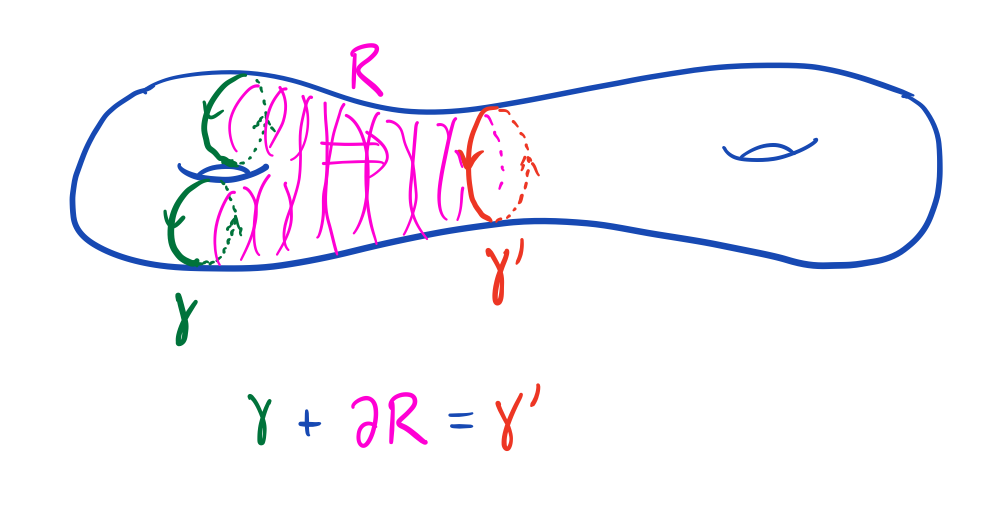The collection of all cycles that are homologous to a given cycle \(z\) is called the homology class of \(z\) and written \( [z] \). The cycle \(z\) is then called a "representative" for \( [z] \). Cycles that differ from \( z \) by a boundary are also representatives for its class: \( [z] = [z + \partial c] \) for any chain \(c\). Note that the class of zero \( [0] \) is just the collection of all boundaries. We may add homology classes by the rule \( [z] + [z'] = [z + z'] \).
It is possible to have a cycle \( [z] \neq [0] \) but have \( k[z] = [kz] = [0] \) for some positive integer \(k \in \mathbb{Z}\). This situation is very cool to try to visualize. Probably the simplest example takes \(X\) to be the Mobius band, and \(A\) to be its boundary. A path cutting across the band is a cycle, since its endpoints are on the boundary. There's no way to get this path as a boundary. Usually to cancel a path, you would add a nearby opposite path or subtract a nearby parallel path. But this path can cancel itself! Its double bounds.
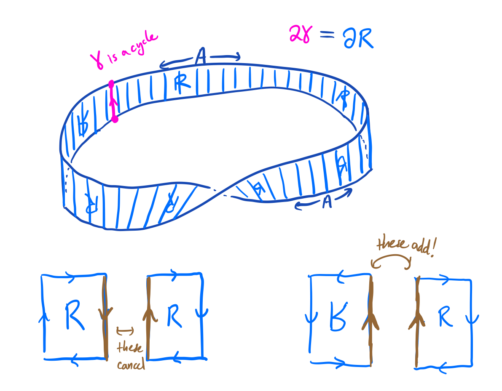 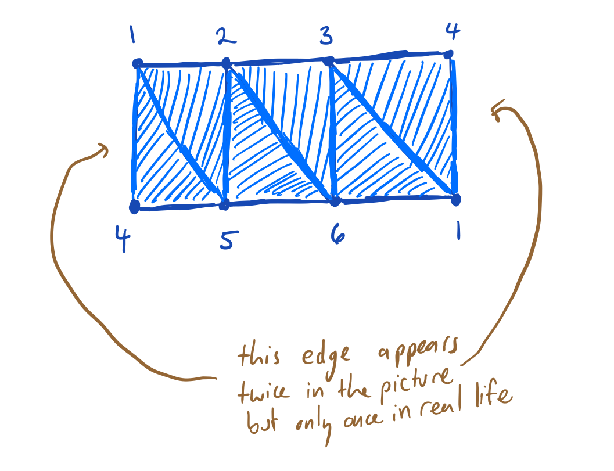
- \(X\) has facets (1, 4, 5), (1, 2, 5), (2, 3, 6), (2, 5, 6), (1, 3, 4), (1, 3, 6)
- \(A\) has facets (1, 2), (2, 3), (3, 4), (4, 5), (5, 6), (1, 6)
Finding a standard representative for each homology class
Suppose given a pair \( (X, A) \). What information would we like from the computer in order to help us understand homology?
Here is one setup. We could ask for a sequence of chains \(f_0, \ldots, f_{b-1}\) so that the boundaries \[ \partial f_0, \ldots, \partial f_{b-1} \] give a basis for all boundaries. (A basis is a set over which any element expands uniquely as a sum with integer coefficients.) And we could ask for a similar, but possibly longer, sequence of cycles giving a basis for the set of all cycles \[ g_0, \ldots, g_{b+h-1} \] subject to equations \[ d_i g_i = \partial f_i \] for all \(0 \leq i < b\), and some divisor chain of integers \(d_0 | d_1 | \cdots | d_{b-1}\).
Then, the standard form for a cycle works like this. First, write the cycle in the basis provided by the \(g_j\). Then, use the equations to try to make the coefficients of the g's as small as possible. For \(j \geq b\), there is no equation available, so these coefficients are stuck. But for \(i < b\), you can use the equations to force the coefficient of \(g_j\) to be in the list \( 0, \ldots, d_i - 1\).
At the end of this procedure, the coefficients of the \(g_j\) provide a standard representative in the same homology class as your original cycle, and the remaining terms provide a formula for the error term, which is manifestly a boundary.
Usually the divisor chain starts with a bunch of ones. As one divides every number, the corresponding coefficients can be made zero. This makes the first few \(g\)'s pretty useless for generating homology, so we omit them from now on.
The collection of all homology classes for a pair is called a "homology group." After choosing coordinates as above, an element of a homology group can be written as an integer vector. Each coordinate is only well-defined up to addition of integer multiples of its corresponding elementary divisor. When these are zero, no equivalence relation is imposed, and when they are one, we drop the term; when they exceed one, we let them live in the notation as denominators. For example, if the divisor chain is \(1, 1, 1, 1, 2, 4, 4, 12, 36, 0, 0 \) then the corresponding homology group is written \[ (\mathbb{Z}/2) \oplus (\mathbb{Z}/4)^{\oplus 2} \oplus (\mathbb{Z}/12) \oplus (\mathbb{Z}/36) \oplus \mathbb{Z}^{\oplus 2} \] and standard form requires that the first entry be in the range 0-1, the next two entries 0-3, the next 0-11, the next 0-35, and the last two arbitrary.
The long exact sequence of a pair
Write \(H(X, A)\) for the set of homology classes of the pair \((X, A)\), and write \(\emptyset \) for the empty subcomplex of \(X\). There are three easy additive maps relating \(H(X, A)\), \(H(X, \emptyset)\), and \(H(A, \emptyset)\). First, \[ \alpha \colon H(A, \emptyset) \to H(X, \emptyset) \] which takes cycles on \(A\) and considers them to be cycles on \(X\). Next, \[ \beta \colon H(X, \emptyset) \to H(X, A) \] which takes cycles on \(X\) and stops caring about the coefficients of faces in \(A\). Finally, \[ \gamma \colon H(X, A) \to H(A, \emptyset) \] which takes the boundary of cycles on \( (X, A) \) thereby obtaining cycles on \(A\). These three maps form a triangle in that each outputs a class that can be used as input for the next. It is important--and not obvious--that these maps are well-defined (return homologous outputs when evaluated on homologous inputs).
In fact, these three maps form an "exact sequence." There are two parts to exactness. First, the output of one map is always sent to the zero homology class by the next map. And second, if a homology class is sent to the zero class by one map, then it actually does arise as an output from the previous.
Share a cool example
Exercises
- Can you find a pair and a non-boundary cycle whose triple is a boundary? Quadruple?
- Any undirected, loopless graph is a simplicial complex. What does homology mean in this case? What does the long exact sequence do?
- Test that the long exact sequence is exact in a few examples. Try to explain why this holds in general.
- The "dimension" of a face is one less than the number of vertices. Every cycle can be written as a sum of chains each of which has pure dimension. Explain why each summand is itself a cycle. What does this mean for homology and the long exact sequence?
- Up to isomorphism, homology groups do not depend on the triangulation. Can you prove this by showing that any two triangulations of a space have a common refinement?
- What will the long exact sequence look like for (three-dimensional sphere, linked circles) vs (three-dimensional sphere, unlinked circles)?
- Find a bug, typo, or mathematical mistake and submit an issue or pull request at https://github.com/jwiltshiregordon/jwiltshiregordon.github.io .
Acknowledgements
Thanks to my coworkers for covering for my week off to build this site. Thanks to Kohei Shinohara for the python packagehsnf which we use
to calculate Hermite and Smith normal forms. Thanks to Anaconda, Inc and all the
contributors at
PyScript, and thanks to upstream ecosystems
Pyodide and
WASM.
Thanks in advance if you're helping emscript stronger stuff: GAP, macaulay2, kenzo, singular,
sage??, qepcad, etc.